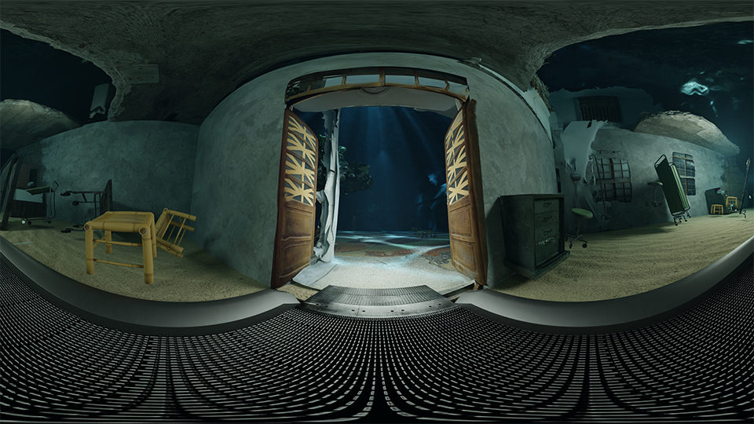

延續2021《仁心仁術診療室-網頁版》，《仁心仁術診療室》虛擬實境的版本，嘗試使用逆向掃描台南烏腳病紀念館並結合 Kinect 動態補捉技術，將舞者的動態融入歷史場景中。
 kinect 動態補捉舞者動作/ 螢幕截圖
kinect 動態補捉舞者動作/ 螢幕截圖
 逆向掃描場景與舞者的動態融合/ 螢幕截圖
逆向掃描場景與舞者的動態融合/ 螢幕截圖
 Blender 影像/ 螢幕截圖
Blender 影像/ 螢幕截圖

Blender 影像/ 螢幕截圖
Credit：李欣穎(Baï Lee)、李明潔、陳臨霜、洪偉瑄(Sandi Hung)
計畫概念發起人／影像文本設計／場景掃描：李欣穎(Baï Lee)
動作設計、演出／場景掃描：李明潔
3D 視覺設計／動作捕捉：洪偉瑄(Sandi Hung)
聲音設計、作曲：陳臨霜
創作顧問：袁廣鳴